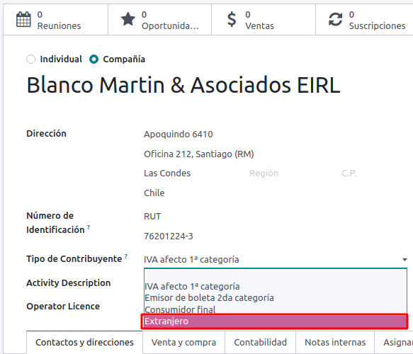
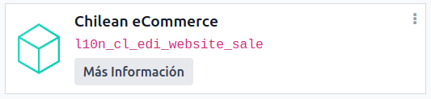
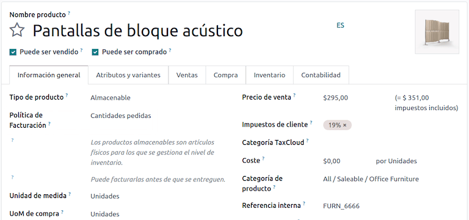
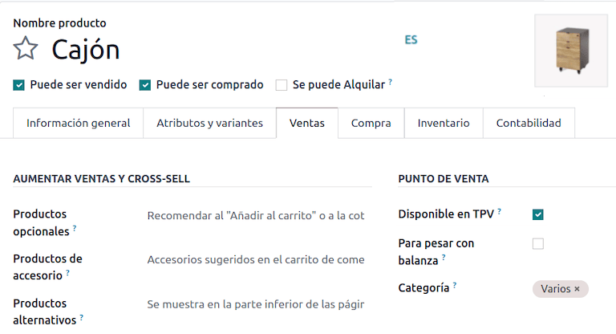

智利¶
模块¶
安装 下列模块，以使用智利本地化的所有功能。
名称 |
技术名称 |
描述 |
|---|---|---|
智利 - 会计 |
|
根据 :abbr:`SII（智利国家税务局）`法规和指导方针，增加了公司在智利运营所需的最低会计功能。 |
智利 - 会计报告 |
|
添加 Propuesta F29 和 Balance Tributario (8 columnas) 报告。 |
智利 - 电子发票 |
|
包括根据:abbr:`SII（智利国家税务局）`法规在线生成和接收电子发票的所有技术和功能要求。 |
智利 - 电子收据 |
|
包括根据:abbr:`SII（智利国家税务局）`法规以数字方式生成和接收电子发票的所有技术和功能要求。 |
利商品电子出口 |
|
包括根据:abbr:`SII（智利国家税务局）`和海关条例生成出口货物电子发票的技术和功能要求。 |
智利 - 电子发票交货指南 |
|
包括所有技术和功能要求，以便根据:abbr: |
注解
Odoo 会根据创建数据库时选择的国家自动为公司安装相应的软件包。
*智利 - 电子发票交货指南*模块依赖于*库存*应用程序。
重要
只有在公司已完成 `SII Sistema de Facturación de Mercado <https://www.sii.cl/factura_electronica/factura_mercado/proceso_certificacion.htm>`_`认证程序的情况下，才能使用所有功能。
公司信息¶
导航至 ，并确保以下公司信息最新且填写正确：
公司名称
地址：
街道
城市
州/省
ZIP
国家/地区
Tax ID: enter the identification number for the selected Taxpayer Type.
Activity Names: select up to four activity codes.
Company Activity Description: enter a short description of the company’s activity.
会计设置¶
Next, navigate to and follow the instructions to configure the:
Fiscal information¶
Configure the following Tax payer information:
Taxpayer Type by selecting the taxpayer type that applies:
VAT Affected (1st Category): for invoices that charge taxes to customers
Fees Receipt Issuer (2nd Category): for suppliers who issue fees receipt (Boleta)
End consumer: only issues receipts
Foreigner
SII Office: select your company’s SII regional office
Electronic invoice data¶
Select your SII Web Services environment:
SII-Test：用于测试数据库，使用从 SII（智利国家税务局）`获取的测试 :abbr:`CAF（发票授权代码）。在这种模式下，可以测试直接连接流，文件被发送到 SII（智利国家税务局） 。
SII - 正式运行数据库：用于正式运行数据库。
SII - 演示模式：文件在演示模式下自动创建和接受，但**不会**发送到:abbr:
SII （智利国家税务局）。因此，在此模式下不会出现拒绝错误或*接受并有异议*。每个内部验证都可以在演示模式下进行测试。请避免在正式运行数据库中选择此选项。
然后，输入:guilabel:法律电子发票数据：
SII Resolution N°
SII Resolution Date

DTE incoming email server¶
The DTE Email Box Electronic Invoicing can be defined to receive your customers’ claim and acceptance emails. Enabling this option from is necessary if you want to use Email Box Electronic Invoicing as the DTE incoming email server.
重要
In order to receive your SII documents, it’s necessary to set up your own email server. More information on how to do this can be found in this documentation: ../../general/email_communication
首先单击 配置 DTE 接收电子邮件，然后单击 新建 添加服务器并填写以下字段：
名称: 给服务器命名。
服务器类型: 选择使用的服务器类型。
IMAP 服务器
POP 服务器
本地服务器：使用本地脚本获取邮件并创建新记录。选择此选项后，可在 配置 部分找到该脚本。
Gmail OAuth 身份验证：需要在常规设置中配置 Gmail API 凭证。可在 登录信息 部分找到配置的直接链接。
DTE服务器：启用此选项。选中此选项后，该电子邮件帐户将用于接收供应商的电子发票，以及来自 SII（智利国家税务局） 的有关电子发票的通信。在这种情况下，该电子邮件应与 SII（智利国家税务局） 网站上内部进口服务部分中声明的两个电子邮件一致：ACTUALIZACION DE DATOS DEL CONTRIBUYENTE, Mail Contacto SII 和 Mail Contacto Empresas。
在 服务器和登录 选项卡中（针对 IMAP 和 POP 服务器）：
服务器名称：输入服务器的主机名或 IP。
Port：输入服务器端口。
SSL/TLS: enable this option if connections are encrypted using the SSL/TLS protocol.
Username: enter the server login username.
Password: enter the server login password.
小技巧
Before going live, it is recommended to archive or remove all emails related to vendor bills that are not required to be processed in Odoo from your inbox.
证书¶
生成电子发票签名需要`.pfx`格式的数字证书。如要添加，请点击 签名证书 部分下的 配置签名证书。然后，点击:guilabel:新建 配置证书：
证书密钥: 点击 上传文件 并选择
.pfx文件。证书密码：输入文件的密码。
主题序列号：根据证书格式，该字段可能不会自动填充。在这种情况下，请输入证书的法定代表:abbr:
RUT（Rol Único Tributario）。证书所有者：如果需要限制特定用户使用证书，请选择一个。若要与所有计费用户共享证书，请将该字段留空。

多币种¶
官方货币汇率由 Chilean mindicador.cl 提供。导航至 ，设置汇率自动更新的 时间间隔，或选择其他 服务。
线上伙伴信息¶
要发送 SII（智利国家税务局） 电子发票，也需要配置合作伙伴联系人。要执行此操作，请打开 应用程序，并在新的或现有的联系人表单中填写以下字段。
名称
电子邮件
识别码
纳税人类型
活动描述
在 电子发票 选项卡中：
DTE 电子邮件：为合作伙伴输入发件人的电子邮件地址。
送货指南价格：选择送货指南显示的价格（如有）。
注解
DTE 电子邮件 是用于发送电子文档的电子邮件，必须在将成为电子文档一部分的联系人中设置。

文件类型¶
会计文档按 :abbr:`SII（智利国家税务局）`定义的文件类型分类。
文档类型在安装本地化模块后自动创建，可通过导航至 进行管理。

注解
有几种文档类型默认为未激活，但可以通过切换 激活 选项激活。
Use on invoices¶
每笔交易的文件类型由以下因素决定：
与发票相关的日记账，确定该日记账是否使用单据。
根据签发人和接收人的类型（如买方或卖方的财政制度）适用条件。
日记账¶
Odoo 销售日记账 通常代表一个业务单位或地点。
Example
Ventas Santiago.
Ventas Valparaiso.
For retail stores it is common to have one journal per POS.
Example
收银员 1.
收银员 2.
*采购*交易可使用一个明细账进行管理，但有时公司会使用多个明细账，以处理一些与供应商账单无关的会计交易。这种配置可以通过以下模式轻松设置。
Example
向政府交税。
员工付款。
创建销售日记账¶
要创建销售日记账，请导航至 。然后，单击 新建 按钮，填写以下所需信息：
类型：从下拉菜单中为客户发票日记账选择 销售。
销售点类型：如果销售日记账用于电子文档，则必须选择:guilabel:
在线`选项。否则，如果日记账用于从以前系统导入的发票，或使用 :abbr:`SII (Servicio de Impuestos Internos)门户网站 Facturación MiPyme，则可使用 手动 选项。Use Documents: check this field if the journal will use document types. This field is only applicable to purchase and sales journals that can be related to the different sets of document types available in Chile. By default, all the sales journals created will use documents.
Next, from the Jounal Entries tab, define the Default Income Account and Dedicated Credit Note Squence in the Accounting Information section. Configuring these fields is required for one of the debit notes use cases.
CAF¶
A folio authorization code (CAF) is required for each document type that will be issued electronically. The CAF is a file the SII provides to the issuer with the folios/sequences authorized for the electronic invoice documents.
您的公司可以申请多个对页，并获得多个与不同对页范围相关联的:abbr:CAF (Folio Authorization Codes)。这些:abbr:CAF 在所有日记账中共享，因此每种文档类型只需一个有效的: abbr:CAF (Folio Authorization Codes)，并将应用于所有日记账。
请参阅`SII 文档 <https://palena.sii.cl/dte/mn_timbraje.html>`_，查看如何获取 CAF 文件的详细信息。
重要
The CAFs required by the SII are different from production to test (certification mode). Make sure you have the correct CAF set depending on your environment.
上传 CAF 文件¶
从:abbr:SII (Servicio de Impuestos Internos) `门户获取 `CAF (Folio Authorization Code) 文件后，需要通过导航至 ，上载到数据库。然后，点击 新建 开始配置。在 CAF (Folio Authorization Code)`表格中，点击 :guilabel:`上传您的文件 按钮上传您的 CAF (Folio Authorization Code)`文件，然后点击 :guilabel:`保存。
上传后，状态将变为 使用中。此时，当交易用于此单据类型时，发票号码会在序列中占据第一个对开页码。
重要
The document types have to be active before uploading the CAF files. In case some folios have been used in the previous system, the next valid folio has to be set when the first transaction is created.
科目表¶
The chart of accounts is installed by default as part of the data set included in the localization module. The accounts are mapped automatically in:
税
Default Account Payable
默认应收科目(PoS)
转移科目
转化率
参见
税¶
作为本地化模块的一部分，税款会自动创建，并附带相关的财务账户和配置。可通过 管理这些税项。
Chile has several tax types, the most common ones are:
增值税：常规增值税可以有多种税率。
ILA：酒精饮料税。
参见
用法和测试¶
电子发票工作流¶
在智利本地化中，电子发票工作流程包括客户发票开具和供应商账单接收。下图解释了信息如何共享给 SII（Servicio de Impuestos Internos）、客户和供应商。

Customer invoice emission¶
创建和配置合作伙伴和日记账后，发票将以标准方式创建。对于智利来说，不同之处在于根据纳税人自动选择的文档类型。如有需要，可通过导航至 手动更改发票上的文档类型。

重要
文档类型 33 电子发票必须至少有一项含税项目，否则 SII 会拒绝文档验证。
验证和 DTE 状态¶
填写了所有发票信息（手动填写或根据销售订单自动生成）后，即对发票进行验证。发票过账后：
自动创建并记录在聊天记录中的 DTE（电子税务文件） 文件。
The DTE SII status is set as Pending to be sent.

DTE 状态是由 Odoo 通过每天晚上运行的预定操作进行自动更新。若需要立即取得税务机关（SII）的回应，您也可以按照 DTE 状态工作流程，手动执行：

The first step is to send the DTE to the SII. This can be sent manually by clicking the Enviar Ahora button. This generates a SII Tack number for the invoice, which is used to check the details sent by the SII via email. Then, the DTE status is updated to Ask for Status.
Once the SII response is received, Odoo updates the DTE status. To do it manually, click on the button Verify on SII. The result can either be Accepted, Accepted With Objection or Rejected.

重要
There are intermediate statuses in the SII before acceptance or rejection. It’s recommended to NOT continuously click Verify in SII for smooth processing.

The final response from the SII can take on one of these values:
Accepted: indicates the invoice information is correct, our document is now fiscally valid and it’s automatically sent to the customer.
Accepted with objections: indicates the invoice information is correct, but a minor issue was identified, nevertheless the document is now fiscally valid and it’s automatically sent to the customer.
Rejected: indicates the invoice information is incorrect and must be corrected. Details are sent to emails you registered in the SII. If it is properly configured in Odoo, the details are also retrieved in the chatter once the email server is processed.
If the invoice is rejected please follow these steps:
Change the document to Draft.
Make the required corrections based on the message received from the SII in the chatter.
Post the invoice again.

Crossed references¶
When the invoice is created, as a result of another fiscal document, the information related to the originator document must be registered in the Cross-Reference tab. This tab is commonly used for credit or debit notes, however, in some cases it can be used for customer invoices, as well. In the case of the credit and debit notes, they are set automatically by Odoo.
开票报告PDF¶
Once the invoice is accepted and validated by the SII and the PDF is printed, it includes the fiscal elements that indicate that the document is fiscally valid.

重要
If you are hosted in Odoo SH or On-Premise, you should manually install the pdf417gen library. Use the following command to install it: pip install pdf417gen.
商业验证¶
发票发送给客户后：
DTE 合作伙伴状态 更改为 已发送。
客户必须发送接收确认电子邮件。
随后，如果商业条款和发票数据无误，则发送接受确认函；否则，发送索赔函。
The field DTE Acceptance Status is updated automatically.
Processed for claimed invoices¶
Once the invoice has been accepted by the SII, it can not be cancelled in Odoo. In case you get a claim for your customer, the correct way to proceed is with a credit note to either cancel the invoice or correct it. Please refer to the 贷记单 section for more details.

Common errors¶
:abbr:`SII（智利国家税务局）`拒绝的原因有多种，但以下是您可能遇到的一些常见错误以及解决方法：
- 错误：
RECHAZO- DTE Sin Comuna Origen提示： 确保正确填写公司地址，包括州/省和城市。 - 错误：
en Monto - IVA debe declararse提示： 发票行应包括一个增值税税种，确保在每个发票行添加一个税种。 - 错误：
Rut No Autorizado a FirmarHint: the RUT entered is not allowed to invoice electronically, make sure the company RUT is correct and is valid in the SII to invoice electronically. - Error:
Fecha/Número Resolucion Invalido RECHAZO- CAF Vencido : (Firma_DTE[AAAA-MM-DD] - CAF[AAAA-MM-DD]) > 6 mesesHint: try to add a new CAF related to this document as the one you’re using is expired. - 错误：
Element '{http://www.sii.cl/SiiDte%7DRutReceptor'： 此元素不是预期元素。预期元素为 （{http://www.sii.cl/SiiDte%7DRutEnvia )..提示： 确保在客户和主公司中设置了 文件类型 和 VAT 字段。 - 错误：
Usuario sin permiso de envio.**提示：**此错误表明贵公司很可能尚未通过 SII （Servicio de Impuestos Internos） - Sistema de Facturación de Mercado中的 `认证程序<https://www.sii.cl/factura_electronica/factura_mercado/proceso_certificacion.htm>`_。如果是这种情况，请联系您的客户经理或客户支持，因为该认证不属于 Odoo 服务的一部分，但我们可以为您提供一些替代方案。如果您已通过认证程序，当与证书所有者不同的用户试图发送 DTE（Documentos Tributarios Electrónicos） 文件到 SII（Servicio de Impuestos Internos） 时，会出现此错误。 - 错误：
CARATULA提示： 出现这种错误的原因只有五个，而且都与 XML 的 Caratula 部分有关：
贷记单¶
当需要取消或更正已确认的发票时，必须生成信用证。需要注意的是，信用证需要一个 CAF 文件，该文件在 SII 中被识别为 文件类型 61。请参阅 CAF 部分，了解有关在每种单证类型上加载 CAF 的过程的更多信息。

用例¶
取消参考文件¶
如果您需要取消或废止发票，请进入 并选择所需的发票。然后，使用 添加贷记 按钮并选择 全额退款，在这种情况下，: abbr:SII（智利国家税务局）`参考代码会自动设置为 :guilabel:`Anula Documento de referencia。

Correct referenced document¶
If a correction in the invoice information is required, for example the street name on the original invoice is wrong, then use the button Add Credit Note, select Partial Refund and select the option Only Text Correction. In this case the SII Reference Code field is automatically set to Corrects Referenced Document Text.

Odoo creates a credit note with the corrected text in an invoice and Price 0.00.

重要
Make sure to define the Default Credit Account in the sales journal specifically for this use case.
Corrects referenced document amount¶
When a correction on the amounts is required, use the button Add Credit note and select Partial Refund. In this case the SII Reference Code is automatically set to Corrige el monto del Documento de Referencia.

借记单¶
在智利本地化中，除贷记票据外，还可使用 添加借记票据 按钮创建借记票据，主要有两种使用情况。
用例¶
Add debt on invoices¶
The primary use case for debit notes is to increase the value of an existing invoice. To do so, select option 3. Corrige el monto del Documento de Referencia for the Reference Code SII field.

In this case Odoo automatically includes the Source Invoice in the Cross Reference tab.

小技巧
You can only add debit notes to an invoice already accepted by the SII.
Cancel credit notes¶
In Chile, debits notes are used to cancel a valid credit note. To do this, click the Add Debit Note button and select the 1: Anula Documentos de referencia option for the Reference Code SII field.

供应商账单¶
As part of the Chilean localization, you can configure your incoming email server to match the one you have registered in the SII in order to:
Automatically receive the vendor bills DTE and create the vendor bill based on this information.
Automatically send the reception acknowledgement to your vendor.
Accept or claim the document and send this status to your vendor.
接收¶
As soon as the vendor email with the attached DTE is received:
供应商账单映射 XML 中包含的所有信息。
An email is sent to the vendor with the reception acknowledgement.
The DTE Status is set as Acuse de Recibido Enviado.
Acceptation¶
如果供应商账单上的所有商业信息都正确无误，您就可以使用 Aceptar Documento 按钮接受文档。完成后，DTE 接受状态`将变为 :guilabel:`已接受 并向供应商发送接受电子邮件。

投诉¶
如果存在商业问题或供应商账单上的信息不正确，您可使用 索赔 按钮在验证文档前提出索赔。完成此操作后，DTE 接受状态`将更改为:guilabel:`索赔，并向供应商发送拒绝电子邮件。

如果您对供应商账单提出索赔，状态将自动从 草稿 变为 取消。鉴于这是最佳做法，所有索赔文件应取消，因为它们对您的会计记录无效。
Electronic purchase invoice¶
The electronic purchase invoice is a feature included in the l10n_cl_edi module.
Once all configurations have been made for electronic invoices (e.g., uploading a valid company certificate, setting up master data, etc.), the electronic purchase invoices need their own CAFs. Please refer to the CAF documentation to check the details on how to acquire the CAFs for electronic purchase invoices.
Electronic purchase invoices are useful when vendors are not obligated to expedite an electronic vendor bill for your purchase. Still, your obligations require a document to be sent to the SII as proof of purchase.
配置¶
To generate an electronic purchase invoice from a vendor bill, the bill must be created in a purchase journal with the Use Documents feature enabled. It is possible to modify an existing purchase journal or create a new one in the following process.
To modify the existing purchase journal, or create a new purchase journal, navigate to . Then, click the New button, and fill in the following required information:
Type: select Purchase from the drop-down menu for vendor bill journals.
Use Documents: check this field so the journal can generate electronic documents (in this case the electronic purchase invoice).
Generate an electronic purchase invoice¶
To generate this type of document, it is necessary to create a vendor bill in Odoo. To do so, navigate to , and click the New button.
When all of the electronic purchase invoice information is filled, select the option (46) Electronic Purchase Invoice in the Document Type field:
After the vendor bill is posted:
The DTE file (Electronic Tax Document) is automatically created and added to the chatter.
The DTE SII Status is set as Pending to be sent.
Odoo automatically updates the DTE Status every night using a scheduled action. To get a response from the SII immediately, click the Send now to SII button.
发货指南¶
要安装 交货指南 模块，请访问 并搜索 智利 (l10n_cl)。然后点击 安装 模块 智利 - 电子发票交货指南。
注解
智利 - 电子发票交货指南 与 智利 - Facturación Electrónica`存在依赖关系。安装 :guilabel:`交货指南 模块时，Odoo 将自动安装该依赖关系。
*交货指南*模块包括将:abbr:DTE（Documentos Tributarios Electrónicos）`发送到:abbr:`SII（Servicio de Impuestos Internos） 的功能，以及在交货报告的 PDF 文件中加盖戳记的功能。
完成 电子发票）所有配置后（例如，上传有效的公司证书、设置主数据等），交付指南需要自己的 CAF（Folio Authorization Code)。请参阅 CAF 说明文档，查看如何获取电子交付指南的 CAF。
在 :guilabel:` 送货指南的价格` 配置中验证以下重要信息：
来自销售订单：交货指南从销售订单获取产品价格，并显示在文件中。
来自产品模板：Odoo获取产品模板中配置的价格，并显示在文件中。
不显示价格：送货指南中未显示价格。
电子交货指南用于将库存从一个地点转移至另一地点，可以代表销售、抽样、寄售、内部转移，基本上所有产品动态。
销售流程中的交货指南¶
警告
一份交货指南**不应**长于一页，或包含超过 60 个产品系列。
创建并确认销售订单后，将生成交货订单。验证交货单后，将激活创建交货指南的选项。

警告
首次点击:guilabel:`创建交货指南`按钮时，会弹出以下提醒消息：
No se encontró una secuencia para la guía de despacho. Por favor, establezca el primer número
dentro del campo número para la guía de despacho

此警告信息意味着用户需要指示 Odoo 生成交付指南所需的下一个序列号（例如下一个可用的 CAF 编号），并且仅在 Odoo 首次创建交付指南时发生。在正确生成第一份文件后，Odoo 会使用 CAF 文件中的下一个可用编号来生成下一份送货指南。
创建送货指南后：
The DTE file (Electronic Tax Document) is automatically created and added to the chatter.
The DTE SII Status is set as Pending to be sent.
The DTE Status is automatically updated by Odoo with a scheduled action that runs every night. To get a response from the SII immediately, press the Send now to SII button.
发送送货指南后，可点击 打印送货指南 按钮进行打印。

Delivery guide will have fiscal elements that indicate that the document is fiscally valid when printed (if hosted in Odoo SH or on On-premise remember to manually add the pdf417gen library mentioned in the Invoice PDF report section).
Electronic receipt¶
To install the Electronic Receipt module, go to and search for
Chile (l10n_cl). Then click Install on the module Chile - Electronic
Receipt.
注解
Chile - Electronic Receipt has a dependency with Chile - Facturación Electrónica. Odoo will install the dependency automatically when the E-invoicing Delivery Guide module is installed.
Once all configurations have been made for electronic invoices (e.g., uploading a valid company certificate, setting up master data, etc.), electronic receipts need their own CAFs. Please refer to the CAF documentation to check the details on how to acquire the CAFs for electronic receipts.
Electronic receipts are useful when clients do not need an electronic invoice. By default, there is
a partner in the database called Anonymous Final Consumer with a generic RUT 66666666-6 and taxpayer type of Final Consumer. This partner can be
used for electronic receipts or a new record may be created for the same purpose.

Although electronic receipts should be used for final consumers with a generic RUT, it can also be used for specific partners. After the partners and journals are created and configured, the electronic receipts are created in the standard way as electronic invoice, but the type of document (39) Electronic Receipt should be selected in the invoice form:

验证和 DTE 状态¶
填写完所有电子收据信息后，手动（或自动）验证销售订单中的收据。默认情况下，电子发票 被选为 文件类型，但为了正确验证收据，请确保编辑 文件类型 并更改为:guilabel:电子收据。
收据过账后：
自动创建 DTE 文件（电子税务文件）并添加到 沟通栏 中。
The DTE SII Status is set as Pending to be sent.

Odoo 会在每天晚上自动更新 DTE状态。要立即从 SII 收到回复，请按 立即发送至 SII 按钮。
对于电子发票，请参阅 DTE 工作流程，因为电子发票的工作流程相同。
商品电子出口¶
要安装 电子货物出口 模块，请进入 并搜索 “智利 (l10n_cl)”。然后点击 安装 智利货物电子出口 模块。
注解
Chile - Electronic Exports of Goods for Chile has a dependency with Chile - Facturación Electrónica.
完成 电子发票 所有配置后（例如，上传有效的公司证书、设置主数据等），电子出口货物就需要它们自己的: abbr:CAF（Folio Authorization Code）。有关如何获取电子收据 CAFs 的详细资料，请参阅 CAF 文档。
出口货物电子发票是税务文件，不仅用于 SII（Servicio de Impuestos Internos），还用于海关，并包含海关要求的信息。
联系人配置¶
智利海关¶
创建电子出口货物发票时，其他信息 选项卡中的这些新字段必须符合智利法规。

PDF 报告¶
一旦发票被 SII（Servicio de Impuestos Internos） 接受和验证，并打印成 PDF 格式，其中就会包含表明该文件具有财务有效性的财务要素，以及海关所需的新部分。

电子商务电子发票¶
要安装 智利电子商务 模块，请访问 ，然后点击 启用 按钮。
该模块可实现以下功能和配置：
从*电子商务* 应用程序生成电子文件
支持 电子商务 应用程序中的必填财务字段
有效地让最终客户决定为其购买生成的电子文档
为智利 电子发票 流程进行所有配置后，还需要进行以下配置才能整合电子商务流程。
要配置您的网站在销售过程中生成电子文档，请进入 并激活 自动发票 功能。激活此功能可在确认在线付款时自动生成电子文档。

由于需要确认在线付款，*自动发票*功能才能生成文件，因此必须为相关网站配置付款提供商。
注解
查看 在线支付 文档，了解 Odoo 支持哪些支付提供商，以及如何配置它们。
我们还建议您对产品进行配置，以便在确认在线付款后开具发票。要执行此操作，请进入 并选择所需产品的产品模板。然后，将 发票政策 设置为 订购数量。
开票流程¶
智利的客户可以在结账过程中多加一个步骤，选择是否需要**发票**或**小票**。

如果客户选择 电子发票 选项，则必须填写财务字段，包括 活动说明、识别码 和 DTE 电子邮件。

如果客户选择了 电子收据 选项，他们将被引导到下一步，并为*Consumidor Final Anónimo*联系人生成电子文档。
来自智利以外国家的客户将由 Odoo 自动生成电子收据。
注解
如果通过电子商务购买的商品需要出口，客户需要联系公司以生成电子出口发票（文件类型 110），可以通过*会计*应用程序完成。
销售点电子发票¶
要安装 智利销售点模块，请进入 Odoo 主仪表板上的 ，搜索模块的技术名称 l10n_cl_edi_pos，然后点击 启用 按钮。

该模块支持以下功能和配置：
从*销售点*应用程序生成电子文档
支持在*销售点*应用程序中创建的联系人所需的财务字段
有效地让最终客户决定为其采购生成的电子文档类型
在票据中打印二维码或 5 位数代码，以获取电子发票
要为联系人配置所需的财务信息，请查看 合作伙伴信息 <chile/partner-information>`部分，或直接修改联系人。导航至 :menuselection:`销售点 –> 会话 –> 客户 –> 详情，并编辑以下任一字段：
名称
电子邮件
识别类型
纳税人类型
Type Giro
DTE 电邮
RUT

要配置产品，请导航至 并选择产品记录。在产品表单的 销售 选项卡中，必须将产品标记为 可用于 POS，这将使产品可在*销售点*应用程序中销售。
可选择在 :menuselection:`销售点 –> 配置 –> 设置 –> 账单和收据部分配置以下功能：
在票单上使用二维码：此功能可在用户收据上打印二维码，方便用户在购买后索取发票。
在票据上生成代码：此功能可以在收据上生成 5 位代码，允许用户通过客户门户申请发票

开票流程¶
以下部分介绍*销售点*应用程序的开票流程。
电子收据：匿名终端用户¶
以匿名用户身份购物，且不要求电子发票时，Odoo 会自动选择 :guilabel:`Consumidor Final Anónimo`作为订单联系人，并生成电子收据。

注解
如果客户因退货而要求开具贷记单据，则应使用 会计 应用程序开具贷记单据。详细说明请参阅 贷方票据和退款 文档。
电子收据：特定客户¶
当特定用户购物时不要求电子发票，Odoo 会自动选择订单的联系人作为 :guilabel:`Consumidor Final Anónimo’，并允许您选择或创建所需的客户联系人及其财务信息，以获取收据。
注解
如果客户因退货而要求出具贷项凭单，贷项凭单和退货流程可直接由 POS（销售点） 会话管理。
电子发票¶
当客户要求开具电子发票时，可以选择或创建包含其财务信息的所需联系人。付款时，选择 发票 选项即可生成文件。

注解
对于电子收据和发票，如果产品不受税收影响，Odoo 会检测到这一点，并为免税销售生成正确类型的文档。
退货¶
对于电子收据（不为 *Consumidor Final Anónimo*生成）和电子发票，可以通过选择 退款 按钮，管理退回在 POS（销售点） 订单中售出的产品的流程。

可按订单状态或联系人搜索订单，并根据客户的原始订单选择退款。

当退货付款生效时，Odoo 会参照原始收据或发票生成必要的贷项凭单，部分或全部取消单据。
财务报告¶
Balance tributario de 8 columnas¶
该报告详细介绍了账目（及其各自的余额），根据账目来源进行了分类，并确定了企业在评估期内的盈亏水平。
您可以在 中找到该报告，并在 报告 字段中选择 智利财政收支（8 栏）（CL）。

Propuesta F29¶
F29*表格是:abbr:`SII（Servicio de Impuestos Internos）`为纳税人提供的新系统，它取代了*采购和销售账簿。该报告由采购登记簿（CR）和销售登记簿（RV）整合而成。其目的是支持与增值税有关的交易，改善其控制和申报。
重要
Odoo 中的 Propuesta F29 (CL) 报告涵盖了基本法律要求，是您最终纳税申报的第一份建议。
该记录由 :abbr:`SII（Servicio de Impuestos Internos）`收到的电子税务文件（DTE）提供。
您可以在 中找到该报告，并选择 报告 选项 Propuesta F29 (CL)。

可以在 中设置 PPM（Provisional Monthly Payments rate）`和 :guilabel:`本财政年度的比例系数。

或在报告中手动点击 ✏️（铅笔） 图标。